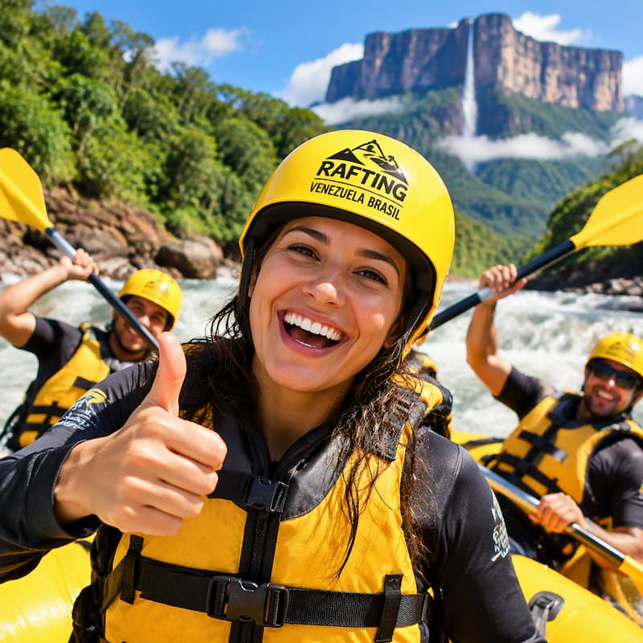

Na Rafting Venezuela Brasil, nossa missão é conectar pessoas à natureza por meio de experiências inesquecíveis de aventura. Buscamos oferecer passeios seguros, emocionantes e sustentáveis, promovendo a beleza dos rios venezuelanos e fortalecendo a amizade entre Venezuela e Brasil. Nosso lema é: "Aventura sem fronteiras".